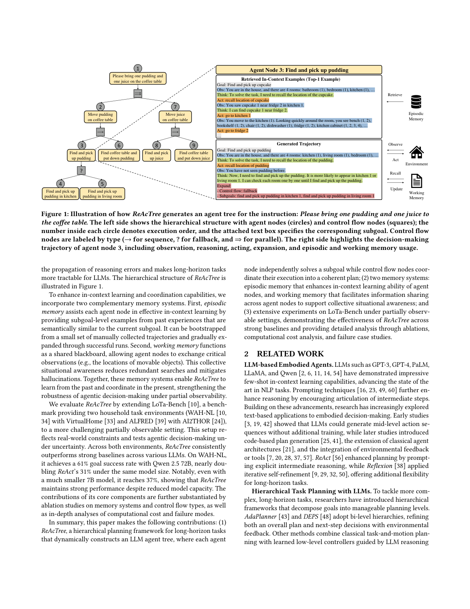
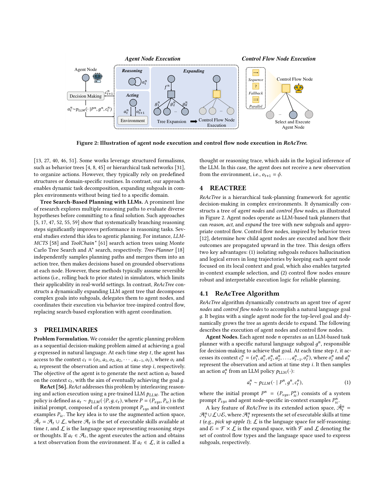
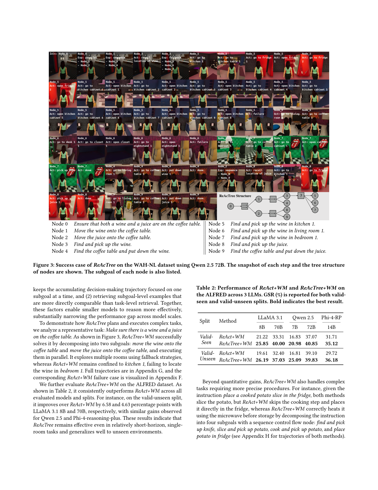
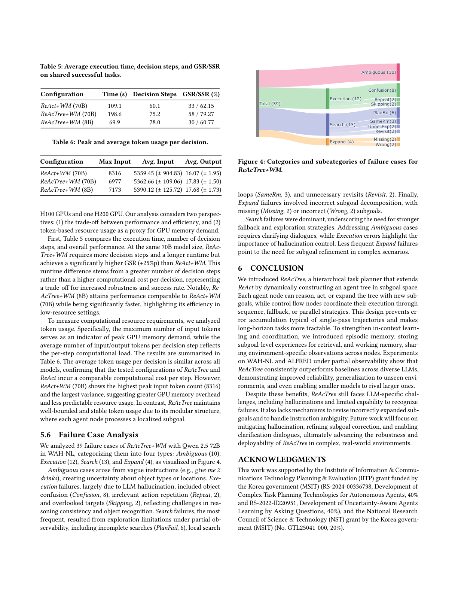

在子目标空间动态构建智能体树，每个智能体节点可推理/行动/扩展，控制流节点以序列/回退/并行协调执行，并配备情景记忆与工作记忆
LLM 的进展推动了具身自主智能体在决策与任务规划上的显著进步，但现有方法多依赖将全部历史决策与观察纠缠在一起的单一轨迹，难以应对复杂长程任务。为此，我们提出 ReAcTree——一种分层任务规划方法，在动态构建的智能体树中将复杂目标分解为可管理的子目标。每个子目标由一个能推理、行动并进一步扩展树的 LLM 智能体节点处理，控制流节点则协调节点执行策略。我们还集成了两套互补记忆：情景记忆（episodic memory）为每个智能体节点检索目标特定的子目标级示例，工作记忆（working memory）跨节点共享环境特定观察。在 WAH-NL 与 ALFRED 上的实验表明，ReAcTree 在多种 LLM 上持续优于 ReAct 等强基线；尤其在 WAH-NL 上，Qwen 2.5 72B 达 61% 目标成功率，近乎 ReAct 的 31% 的两倍。
LLM 通过生成中间推理步展现了推理能力，为具身智能体决策与规划带来可能。融入环境观察/反馈可进一步提升，但现有方法多用单一轨迹纠缠多子目标的所有决策与观察，增加幻觉与逻辑失败风险；另一类研究用多推理路径（假设可模拟多路径并回退），但真实场景因不可逆动作（如切苹果）与部分可观测性而难以实现。
为此，我们提出 ReAcTree：在子目标空间（而非原子动作的动作树）动态构建智能体树。每个 LLM 智能体节点负责一个子目标并扩展 ReAct 范式——可推理、行动，或在任务过复杂时通过提出带控制流的新子目标来扩展树。受行为树（Behavior Trees）启发的控制流节点通过序列（sequence）、回退（fallback）、并行（parallel）协调各智能体。概念上，ReAcTree 将 Least-to-Most 提示策略从静态推理扩展到动态智能体规划。通过将问题分解为语义隔离的子目标并各配以聚焦上下文，ReAcTree 防止推理错误传播，使长程任务对 LLM 更可控（图 1）。

为增强上下文学习与协调能力，引入两套互补记忆：情景记忆为节点提供与当前子目标语义相似的历史子目标级示例，可由少量人工轨迹引导并逐步扩充；工作记忆充当共享黑板，让节点交换关键观察（如可移动物体位置），减少冗余搜索、缓解幻觉。在 LoTa-Bench 的 WAH-NL / ALFRED 部分可观测设置下，ReAcTree 持续优于各基线；Qwen 2.5 72B 达 61% GSR（ReAct 31%），即便 7B 小模型也达 37%。消融研究证实了记忆系统与控流类型的贡献。
基于 LLM 的具身智能体： 早期工作用提示生成中层动作序列，后续引入代码化计划生成、经典架构扩展、环境反馈/工具集成；ReAct 用显式中间推理增强规划，Reflexion 用迭代自精炼。分层任务规划： AdaPlanner、DEPS 采用双层层级；部分工作结合行为树或 HTN，但多依赖预定义结构或领域特定例程。基于树搜索的规划： LLM-MCTS、ToolChain∗ 分别用 MCTS 与 A∗ 搜索动作树，Tree-Planner 独立采样路径合并为动作树；但这些方法通常假设模拟器中动作可逆，限制了真实场景适用性。ReAcTree 则构建动态扩展的智能体树，用行为树式控制流协调，以智能体协调取代基于搜索的探索。
问题形式化： 将智能体规划视为顺序决策，目标 $g$ 以自然语言给出；每步 $t$ 智能体拥有上下文 $c_t=(o_1,a_1,\dots,a_{t-1},o_t)$，目标是基于 $c_t$ 生成下一动作 $a_t$。ReAct： 用预训练 LLM 交错推理与行动，策略 $a_t\sim p_{LLM}(\cdot|P,g,c_t)$，其中 $P=(P_{sys},P_{ic})$ 为初始提示；扩展动作空间 $\hat A_t=A_t\cup L$（$A_t$ 可执行技能，$L$ 语言空间表示推理），若 $a_t\in A_t$ 则执行并获观察，若 $a_t\in L$ 则为思维（不获新观察）。
ReAcTree 动态构建智能体节点与控制流节点的树（图 2）。智能体节点作为 LLM 任务规划器，可推理、行动、用新子目标扩展树；控制流节点依据行为树原则决定子节点执行方式与结果向上传播。两大优势：(1) 隔离子目标减少长轨迹中的幻觉与逻辑错误，并支持针对性上下文示例选择；(2) 控制流节点保证稳健、可解释的可靠规划逻辑。

从顶层目标的单个智能体节点出发，随智能体决定扩展而动态生长。每个智能体节点 $n$ 有子目标 $g_n$，按 $a^n_t\sim p_{LLM}(\cdot|P_n,g_n,c^n_t)$ 采样动作（式 1），提示 $P_n=(P_{sys},P^n_{ic})$ 含节点特定示例。其扩展动作空间 $\hat A^n_t=A^n_t\cup L\cup E$，其中 $E=F\times L$ 为扩展空间（$F$ 控制流类型集，$L$ 表达子目标的语言空间）。若 $a^n_t\in A^n_t$ 或 $L$，则如 ReAct 般执行/推理；若 $a^n_t\in E$，则创建控制流节点为子、生成子目标的智能体节点为孙，形式 $a^n_t=(f^n,[g^n_1,\dots,g^n_K])$。节点在 done（成功）、failure 或达最大决策数时终止。
控制流节点支持三类：sequence(→) 顺序执行子节点，全部成功才成功、任一失败即失败；fallback(?) 顺序执行，首个成功即成功、全部失败才失败；parallel(⇒) 顺序执行不早停，按预定义策略（多数投票）聚合结果。执行后向父节点汇报整体成败。
情景记忆： 每个智能体节点 $e$ 的完整决策轨迹构成子目标级经验，存入 $M_{ep}$。每条经验记为元组 $(t_e,v_e,s_e)$：$t_e$ 为完整文本轨迹，$v_e=f_{sen}(g_e)$ 为子目标句向量（Sentence-BERT），$s_e\in\{success,failure,expand\}$ 为终止状态。推理时按余弦相似度检索 top-$k$ 相似经验作上下文示例，同分时跨终止状态均匀采样以保证多样性；可由少量人工轨迹引导扩充。工作记忆： 在单次运行内跨节点共享环境特定信息（本文聚焦跟踪可移动物体位置），通过特殊动作 `recall location of <object>` 查询、并在观察时自动更新，实现为映射物体类到实例与位置的轻量字典，将「回忆位置」视作类工具动作。
遵循 LoTa-Bench，在 WAH-NL（VirtualHome，长程多房间多子目标）与 ALFRED（AI2THOR，短程单房间单目标）上扩展为部分可观测设置。WAH-NL 有 250 训练/100 测试任务（5 类），ALFRED 有 7 类任务。指标：目标成功率 GSR 与子目标成功率 SSR。以 LLaMA-3.1 70B 引导情景记忆（仅保留成功执行），检索轨迹总长≤5K token，决策上限 WAH-NL 200 / ALFRED 100。基线：ZSP、Tree-Planner(N=25/50)、ReAct、ReAct+WM。
ZSP 一次性生成完整计划难以适应部分可观测；Tree-Planner 采样多高层计划构建动作树，但若采样全失败则无法恢复，搜索空间大时尤甚。ReAcTree 因将任务分解为聚焦子目标、由控制流协调，在长程部分可观测下更可控。图 3 展示「咖啡桌上放红酒和果汁」的成功案例：分解为两子目标并行执行，用回退策略探索多房间，而 ReAct+WM 困于 kitchen 1 找不到卧室红酒。

对 Qwen 2.5 72B 的 39 个失败分为四类：Ambiguous(10) 指令模糊、Execution(12) 执行失败（混淆 8/重复 2/遗漏 2）、Search(13) 搜索失败（最频繁，含探索受限）、Expand(4) 扩展失败（子目标缺失/错误）。Search 失败主导，凸显需更强回退与探索策略。

我们提出 ReAcTree——一个扩展 ReAct 的分层任务规划器，在子目标空间动态构建智能体树：每个节点可推理、行动或扩展新子目标，控制流节点以序列/回退/并行协调执行，防止单一轨迹典型的错误累积，使长程任务更可控。引入情景记忆（存储子目标级经验供检索）与工作记忆（跨节点共享环境观察）。在 WAH-NL 与 ALFRED 部分可观测下的实验表明其持续优于基线，并展现更好的可靠性、对未见环境的泛化，甚至让小模型媲美大模型。局限包括仍受 LLM 幻觉与失败识别能力限制，缺乏修正错误扩展子目标与处理指令歧义的机制；未来将聚焦缓解幻觉、精炼子目标修正与澄清对话。